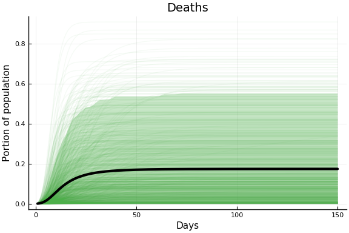

This work is licensed under a Creative Commons Attribution-ShareAlike 4.0 International License
using Pkg
#Pkg.activate(".") # If running on vse.syzygy.ca, you might need to uncomment this command
#try
using CovidSEIR
#catch
#Pkg.add(PackageSpec(url="https://github.com/schrimpf/CovidSEIR.jl"))
#using CovidSEIR
#end
using Plots
Plots.pyplot()
using DataFrames, JLD2
jmddir = normpath(joinpath(dirname(Base.find_package("CovidSEIR")),"..","docs","jmd"))
"/home/paul/.julia/dev/CovidSEIR/docs/jmd"
Introduction¶
Data¶
We will use data from Johns Hopkins University Center for Systems Science and Engineering. It is gathered from a variety of sources and updated daily. JHU CSSE uses the data for this interactive website.. For another course, I wrote some notes using this data in python here.
This data has daily cumulative counts of confirmed cases, recoveries, and deaths in each country (and provinces within some countries).
covdf = covidjhudata()
describe(covdf)
11×8 DataFrame. Omitted printing of 2 columns
│ Row │ variable │ mean │ min │ median │ max │ nuni
que │
│ │ Symbol │ Union… │ Any │ Union… │ Any │ Unio
n… │
├─────┼───────────┼───────────┼─────────────┼───────────┼────────────┼─────
────┤
│ 1 │ Date │ │ 2020-01-22 │ │ 2020-03-29 │ 68
│
│ 2 │ confirmed │ 521.072 │ 0 │ 0.0 │ 140886 │
│
│ 3 │ Province │ │ Alberta │ │ Zhejiang │ 79
│
│ 4 │ Country │ │ Afghanistan │ │ Zimbabwe │ 177
│
│ 5 │ Lat │ 22.0528 │ -41.4545 │ 23.8298 │ 71.7069 │
│
│ 6 │ Long │ 23.2675 │ -135.0 │ 20.9394 │ 178.065 │
│
│ 7 │ deaths │ 20.5945 │ 0 │ 0.0 │ 10779 │
│
│ 8 │ recovered │ 168.91 │ 0 │ 0.0 │ 62570 │
│
│ 9 │ iso2c │ │ AD │ │ ZW │ 171
│
│ 10 │ cpop │ 2.2813e8 │ 33785.0 │ 2.49924e7 │ 1.39273e9 │
│
│ 11 │ ppop │ 2.74801e7 │ 41078 │ 1.557e7 │ 111690000 │
│
Model¶
We will estimate a susceptible, exposed, infectious, recovered (SEIR) epidemiological model of Covid transmission. In particular, we will use a version based on this webapp by Allison Hill.
The model contains the following variables, all of which are functions of time
- $S$: Susceptible individuals
- $E$: Exposed individuals - infected but not yet infectious or symptomatic
- $I_i$: Undetected infected individuals in severity class $i$.
Severity increaes with $i$ and we assume individuals must pass
through all previous classes
- $I_1$: Mild infection
- $I_2$: Severe infection
- $C_i$ confirmed infected individuals in severity class $i$
- $R = R_u + R_c$: individuals who have recovered from disease and are
now immune
- $R_u$ recovered individuals whose infection were never detected
- $R_c$ recovered individuals who were confirmed cases
- $X$: Dead individuals
Compared to Hill’s model, we have reduced the number of severity classes and from 3 to 2, and we have added undetected infections and recoveries. In the data, we observe active confirmed cases $\approx \sum_i C_i$, deaths $\approx X$, and confirmed recoveries $\approx R_c$.
These variables evolve according to the following system of differential equations.
Where the parameters are :
- $\beta_i$ rate at which infected individuals in class $i$ contact susceptibles and infect them
- $a$ rate of progression from the exposed to infected class
- $\gamma_i$ rate at which infected individuals in class $i$ recover from disease and become immune
- $p_1$ rate at which infected individuals in class $i$ progress to class $i+1$
- $p_2$ death rate for individuals in the most severe stage of disease
- $\tau$ rate at which infections of class $1$ are detected
Note that we are assuming that all severe infections are detected (and hence $I_2 = 0$). We are also assuming that confirmed and unconfirmed cases have the same recovery and progression rates.
Empirical Model¶
Our data has country population, $N$, daily cumulative confirmed cases, $c_t$, deaths, $d_t$, and recoveries, $r_t$. We will assume that at a known time 0, there is an unknown portion of exposed individuals, $p_0$, so
and all other model variables are 0 at time 0. We assume that the observed data is distributed as
Model Limitations¶
An important limitation is that the model assumes all parameters are constant over time. This is almost surely incorrect. Most countries have implemented quarantine and distancing policies to attempt to reduce $\beta$. Efforts have also been made to increase $\tau$. Innovations in treatment and crowding of the medical system likely lead to variation in $\gamma$ and $p$.
Single Country Estimates¶
Priors¶
We use the follow prior distributions. The means of these are loosely based on Hill’s defaults.
using Distributions
defaultcountrypriors() = Dict(
"a" => truncated(Normal(1/5, 3), 1/14, 1.0),
"p[1]" => truncated(Normal(0.05, 0.3), 0, 1),
"p[2]" => truncated(Normal(0.05, 0.3), 0, 1),
"γ[1]" => truncated(Normal(0.133, 0.5), 0, 3),
"γ[2]" => truncated(Normal(0.05, 0.3), 0, 1),
"β[1]" => truncated(Normal(0.5, 1), 0, 10),
"β[2]" => truncated(Normal(0.5, 1), 0, 10),
"τ" => truncated(Normal(0.2, 2), 0, 10),
"pE0" => truncated(Normal(0.001, 0.1), 0, 1),
"sigD" => InverseGamma(2,3),
"sigC" => InverseGamma(2,3),
"sigRc" => InverseGamma(2,3))
Summary statistics of draws from this prior distribution are below.
pr = priorreport()
pr.tbl
2-element Array{MCMCChains.ChainDataFrame,1}
Summary Statistics
parameters mean std naive_se mcse ess r_hat
────────── ────── ─────── ──────── ────── ──────── ──────
a 0.5654 0.2686 0.0170 0.0188 255.2811 0.9997
pE0 0.0854 0.0654 0.0041 0.0058 310.1646 0.9974
p[1] 0.2459 0.1867 0.0118 0.0113 240.1762 0.9963
p[2] 0.2600 0.1719 0.0109 0.0023 362.0081 0.9960
sigC 3.4108 10.0378 0.6348 0.9028 174.6732 1.0012
sigD 3.1483 3.6424 0.2304 0.4784 109.6841 0.9964
sigRc 2.8166 3.5338 0.2235 0.3084 211.0814 0.9962
β[1] 0.9970 0.7070 0.0447 0.0903 442.4055 1.0014
β[2] 1.0751 0.7259 0.0459 0.0050 420.5231 0.9960
γ[1] 0.4729 0.3576 0.0226 0.0133 493.1301 0.9960
γ[2] 0.2401 0.1790 0.0113 0.0155 307.0043 0.9960
τ 1.7502 1.3210 0.0835 0.0229 420.2080 0.9961
Quantiles
parameters 2.5% 25.0% 50.0% 75.0% 97.5%
────────── ────── ────── ────── ────── ───────
a 0.1265 0.3293 0.5625 0.8090 0.9721
pE0 0.0054 0.0297 0.0734 0.1242 0.2384
p[1] 0.0087 0.1004 0.2080 0.3539 0.6629
p[2] 0.0135 0.1341 0.2363 0.3662 0.6451
sigC 0.6001 1.2797 1.9516 3.0770 14.1916
sigD 0.5913 1.1629 1.9222 3.3838 14.8259
sigRc 0.4710 1.0214 1.8535 3.3675 11.1009
β[1] 0.0337 0.4814 0.8895 1.3505 2.7546
β[2] 0.0904 0.4408 0.9420 1.5911 2.5477
γ[1] 0.0159 0.1908 0.3636 0.7015 1.2829
γ[2] 0.0053 0.0987 0.1977 0.3463 0.6898
τ 0.1238 0.7963 1.3958 2.5012 5.0382
The following plots show the implications of this prior for the observed data. The faint lines on each figure shows 1000 trajectories sampled from the prior distribution. The black line is the prior mean. The shaded region is a pointwise 90% prior credible interval.
plot(pr.figs[1], xlabel="Days", ylabel="Portion of population")

plot(pr.figs[2], xlabel="Days", ylabel="Portion of population")

plot(pr.figs[3], xlabel="Days", ylabel="Portion of population")

Subjectively this prior seems reasonable. It is perhaps too concentrated on relatively fast epidemics. I may alter it, but it’s what I used for the current results.
Estimation¶
We estimate the model by MCMC. Specifically, we use the Turing.jl package (Ge, Xu, and Ghahramani 2018) . For sampling, we use the No-U-Turn-Sampler variant of Hamiltonian Monte Carlo. In the results below we use 4 chains with 1000 warmup iterations, and 1000 iterations for the results.
Results¶
Extensions¶
- Estimate single country model for more countries/areas.
- Estimate a multi-country model with some parameters common across countries and others multi-level distributions.
- Allow time varying parameters.
About this document¶
This document was created using Weave.jl. The code is available in on github.
Ge, Hong, Kai Xu, and Zoubin Ghahramani. 2018. “Turing: A Language for Flexible Probabilistic Inference.” In International Conference on Artificial Intelligence and Statistics, AISTATS 2018, 9-11 April 2018, Playa Blanca, Lanzarote, Canary Islands, Spain, 1682–90. http://proceedings.mlr.press/v84/ge18b.html.